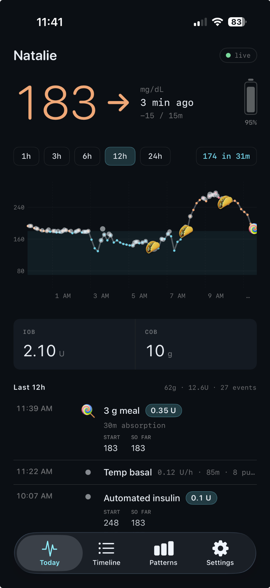
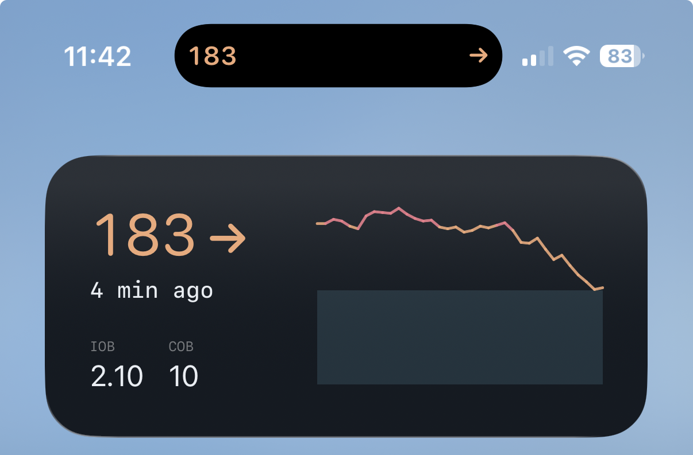
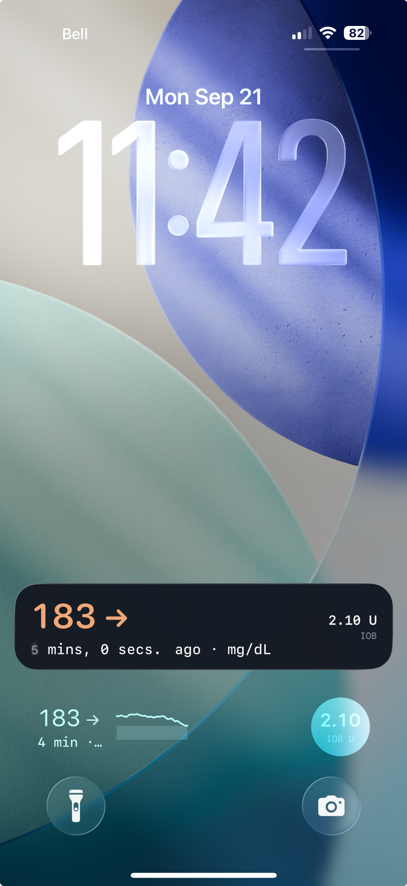
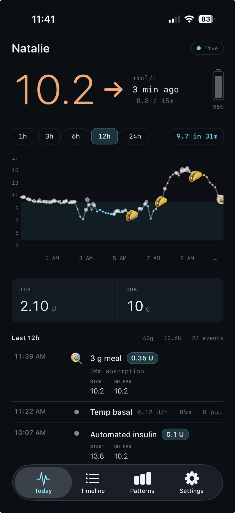
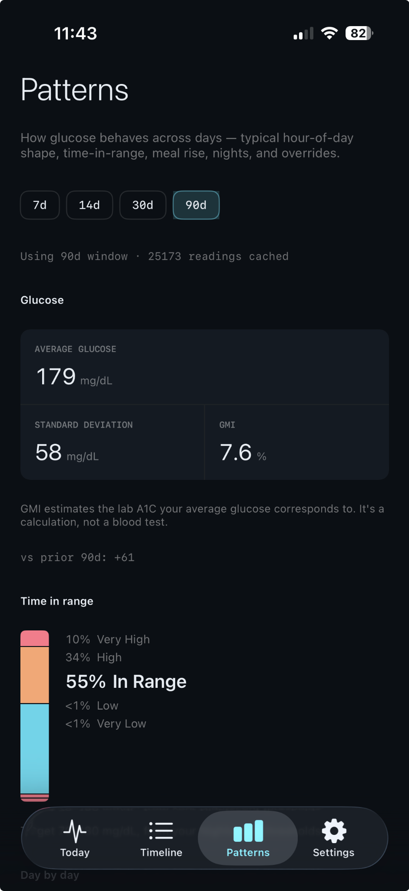
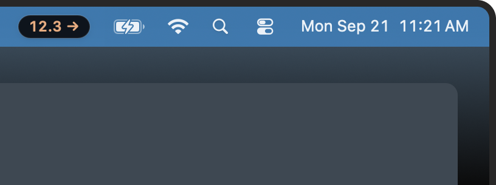
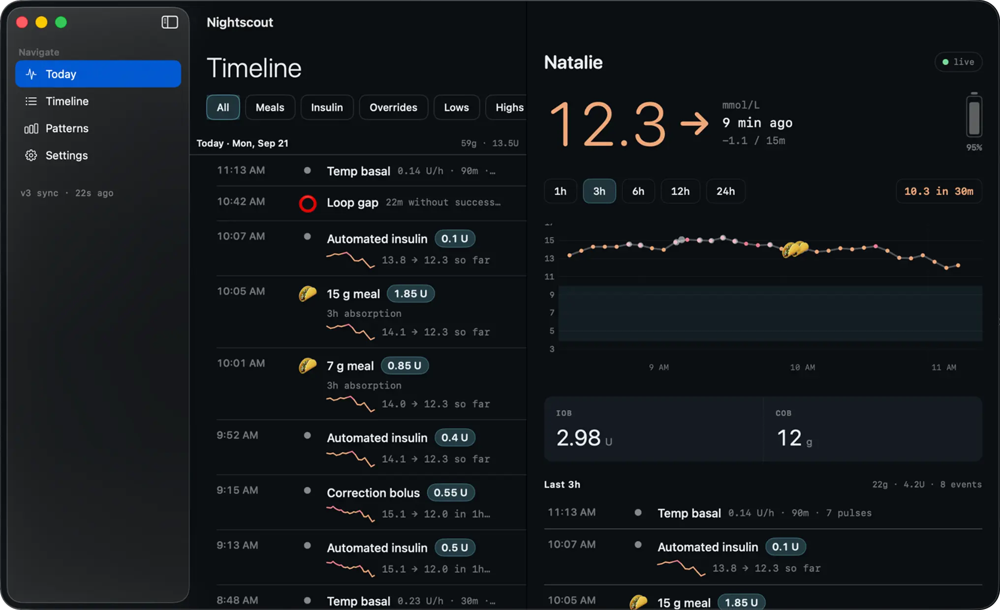
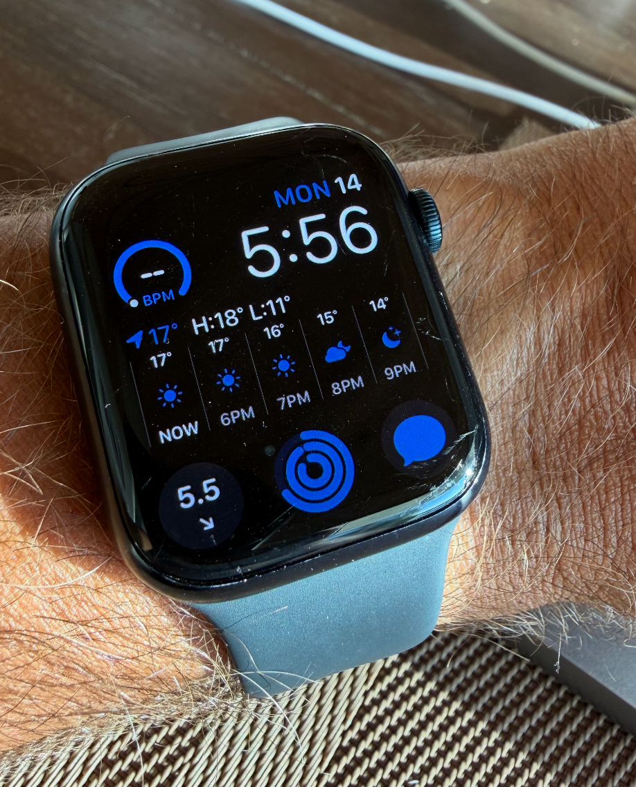
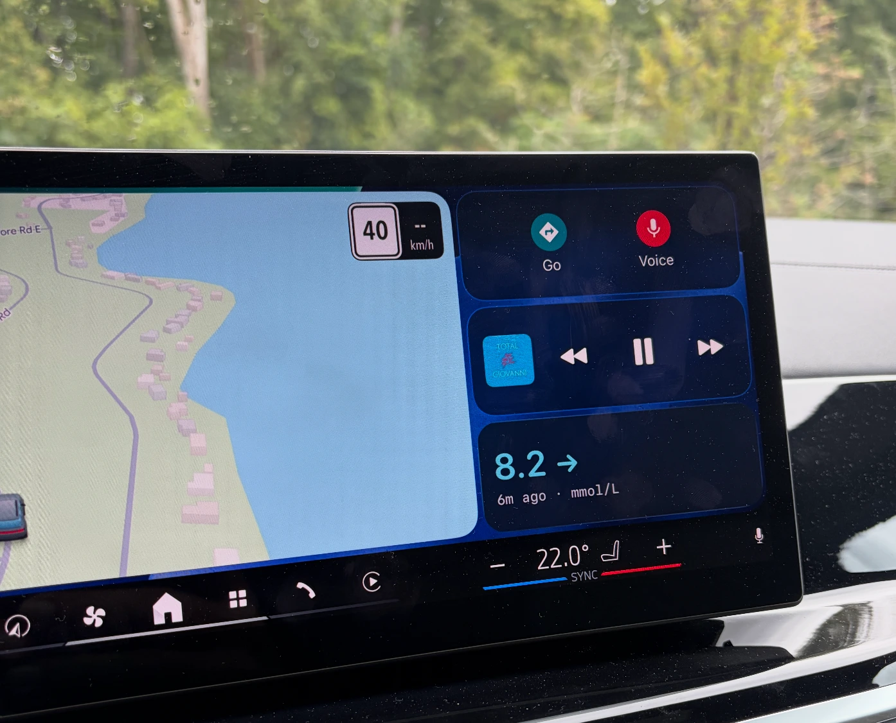

Your Nightscout, at a glance.
A simpler way for parents and caregivers to follow a Nightscout site on iPhone, Apple Watch, widgets, and Mac.


More ways to view CGM data.
Connect using your Nightscout URL and a readable token (if required). See current glucose and trend, insulin and carbs on board, recent meals and doses, loop status, and longer-term patterns including average, time in range, and GMI. The app refreshes in the background as best it can, so a number or watch complication is there when you glance.
For followers
Especially parents and caregivers who already have access to someone’s Nightscout site.
A clearer picture
It's more than just about the number. The app helps answer why, even though we all know sometimes it's just a mystery.
Know the limits
The app talks to Nightscout only, it does not connect to your CGM or pump. If it's not in Nightscout, it won't show in the app.
From a quick glance to the full picture.
See the app in the places you already look. Screens show both mg/dL and mmol/L; choose your preferred unit in the app.
iPhone
Full-screen views, a Home Screen widget, and both a Live Activity and widgets on the Lock Screen.



Mac
A menu bar indicator for a glance and a full window when you want detail.


Apple Watch
A complication where a glance is enough.

CarPlay
The Live View can appear alongside navigation, so you can glance at the current reading in the car. You can also add a CarPlay widget.

Keep your source of truth close.
Nightscout Follow is informational and is not a medical device. A missing meal or dose here does not mean it did not happen. Silence from notifications does not mean nothing happened. Always confirm treatment decisions in your CGM and pump apps.
Why I built Nightscout Follow
My daughter was diagnosed with Type 1 when she was 8 years old. After many years, we're now fully up to speed with the best technology. We use Dexcom 7 + Omnipod Dash + Loop + Nightscout.
But as any other parents of T1D kids will know - tools for parents and caregivers are quite limited. Dexcom's Follow app is great for urgent notifications, and Nightscout is very informative to get detailed information on our laptop (or with our endocronologist), but there was a massive gap in between where we needed to know why she was going high or low - not just when - and we needed it on our phones. So I built a better Nightscout viewer for iOS.
It has been working great for us - we can see all the Loop info on our phone + live CGM readings on widgets and our watch, on our macBook menu bar and even in carPlay. If you're a parent or a caregiver, I hope this helps. I'll continue to develop and improve the app for the various technology setups. If you join the beta, please use the TestFlight feedback feature to let me know how it works with your setup.
Nightscout Follow is an independent app. It is not affiliated with or endorsed by The Nightscout Foundation.
Frequently asked questions
The widget isn't up-to-date all the time.
Only the app itself is truly live. Everything else is a best-effort copy that Apple decides when to update — which is why every surface shows how old the reading is.
- App (open): Live. Pulls a new reading every few minutes while you're looking at it. This is the one to trust.
- Mac menu bar: Same as the app, but only while the Mac is awake and the app is running. Asleep means frozen.
- Widgets (phone, iPad, lock screen): iOS gives them a limited number of redraws a day and spends them how it likes. Usually a few minutes behind; sometimes much more on Low Power Mode or if you rarely look.
- Live Activity (lock screen banner): Updates while it's running, but can be throttled. The "X min ago" keeps counting even when the number doesn't change — that's the honest bit.
- Watch complication: The slowest. It needs your phone in range to feed it, and watchOS rations updates on top of that. Treat it as a glance, not a check.
The rule for all of them: read the age, not just the number. If it's dimmed or the age is climbing, open the app.
How do I install the beta?
If you're already on the TestFlight beta, you can update to the latest version by opening the TestFlight app and tapping the Updates tab. If you're not on the beta, you can join by clicking the "Join the Beta on TestFlight" button above.
Once you're on the beta, you can update to the latest version by opening the TestFlight app and tapping the Updates tab.
I don't have a Nightscout site.
Nightscout Follow is for people who already have a Nightscout site. If you don't have a Nightscout site, you can set one up for free at Nightscout.org or use a paid hosted service like Nightscout.pro.
Some of my information appears as raw data in the app
There are many different technologies that connect to Nightscout and displaying the data uniformly is challenging. I did my best to capture the most common ones. Please use the TestFlight feedback feature to let me know what's missing or what's wrong with your setup.
Privacy policy
Nightscout Follow is a viewer. It shows data from a Nightscout site you already run. It is not a medical device. This policy describes what the app does on your devices.
1. Who this covers
This policy covers anyone who installs Nightscout Follow on iPhone, iPad, Apple Watch, or Mac. The developer does not operate a Nightscout site, create an account for you, or receive the glucose, insulin, meal, or device data displayed. That data lives on the Nightscout site whose address you enter. If it holds a child’s data, you are responsible for that site and who can access it.
2. What we do not collect
The developer does not collect or have access to your Nightscout URL or token; glucose, treatments, insulin or carbs on board, predictions, or device status; name, email, Apple ID, contacts, location, photos, microphone, or HealthKit data; advertising identifiers; or usage analytics and recordings. There is no cloud account or login with us.
3. What stays on your devices
-
Credentials: The site URL and readable token are stored in Keychain
in an app group for widgets and watch refreshes. The Watch may keep a copy in the
shared App Group as
watch-credentials.jsonif WatchConnectivity is unavailable. - Health data cache: Entries, treatments, device status, and related records are cached locally in SwiftData in the App Group container for offline views and refreshes.
- Widget snapshot: A small JSON snapshot of current reading, trend, IOB, COB, sparkline, units, and colour settings supports widgets and Live Activity.
- Settings: Units, colour policy, display name, meal notification preference, and similar choices live in UserDefaults, including the App Group suite.
- Disclaimer: Acceptance version and time stay on the device after sign-out; they record that this install accepted the notice, not your identity.
- Optional notes: Pod or sensor lot/serial text stays local with the session. If a matching treatment exists and your token permits writing, the app may PUT the note to that treatment on your own site. A failed write leaves it local.
None of this is uploaded to the developer.
4. What leaves the device
Your Nightscout site: App, widget, background, and Watch refreshes make
HTTPS requests to your URL. Paths can include /api/v1/status.json,
/api/v1/entries.json, /api/v1/treatments.json,
/api/v1/devicestatus.json, /api/v1/profile.json, and
/api/v2/properties/…. Nightscout attaches the token as a query parameter.
Your host or reverse proxy can see requests, tokens, and returned data. The app adds no
developer server between you and Nightscout.
Optional write: Saving a lot or serial may PUT a treatment’s
notes field to /api/v1/treatments/{id} on your site. The app
does not create treatments, change doses, or write glucose.
Paired Watch: The phone may send the URL, token, and a glucose snapshot to your paired watch through Apple WatchConnectivity. Widgets, Live Activities, and CarPlay render on-device data; a widget refresh may contact your Nightscout URL. Opt-in meal banners are local notifications, not developer push messages.
Export and camera: You may share a fixture export through Files or AirDrop yourself. The app never transmits it on its own. Optional barcode camera frames are processed on-device; you may type the lot or serial instead.
5. Background refresh
iOS may wake the app or widget through BGAppRefresh. Each granted wake contacts your Nightscout URL and updates local data. Apple controls the schedule. A missed wake means data may be stale.
6. Apple, TestFlight, and App Store
Apple processes install records and diagnostics under its own practices. There is no third-party crash reporter. If you elect to share a crash report with the developer, Apple may send a stack trace, app and OS version, and device model. We use it only to fix the app. Do not paste credentials into feedback. Encrypted device backups may include app data and Keychain items under your backup settings. See Apple’s privacy policy.
7. Your Nightscout host and children
Your host separately controls its logs, backups, retention, and tokens. Use a dedicated least-privilege token: readable is enough for viewing, while write access is needed only for optional notes. The app is intended for adults with lawful access, including parents and caregivers. We do not knowingly collect children’s personal information and cannot see the site’s data. Protect the site with HTTPS and a strong token.
8. Your choices
- Decline the notice and remove the app.
- Sign out to remove URL and token from Keychain, local cache and widget snapshot, and request the paired Watch drop its copies. This does not alter Nightscout; disclaimer acceptance stays on the device.
- Delete the app to remove its sandbox and App Group files, with Keychain removal subject to Apple’s uninstall rules.
- Revoke a token in Nightscout, especially after losing a device.
- Disable notifications, widgets, Live Activities, background refresh, or the Watch app in system settings.
There is no developer-held data to download. Use your Nightscout site or host for data stored there.
9. Sharing, legal process, and security
We do not sell, rent, or share health data. We cannot produce your glucose history because we do not have it. We comply with lawful requests for information we do hold, such as an email you send or a crash report Apple supplied, and no further.
Transport uses HTTPS. The token is stored in Keychain with
AfterFirstUnlock; the cache is in the app’s shared App Group container. A
token in a Nightscout query string may appear in host access logs. Prefer a dedicated
token and rotate it if a device is lost. An unlocked lost phone, compromised host, or
token pasted into a screenshot is outside what the app can prevent.
10. Changes and contact
Material data-handling changes will version the in-app “Before you start” notice and show it again. The device stores the accepted version so the app knows when to ask.
Contact:
nsfollow@ymsdynamics.com
Operator:
YMS Dynamics Inc., Ontario, Canada
This app is provided as-is, for information only. It must not be used to make treatment decisions.